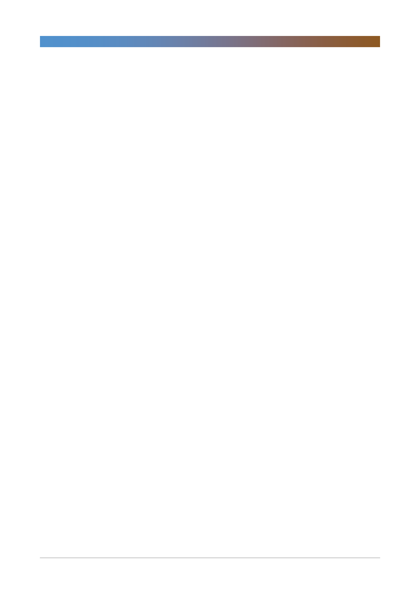

CJ제일제당(097950)
기업개요 및 용어해설
CJ제일제당은 식품소재 및 가공식품, 생명공학 관련 제품을 제조하는 종합 식품 기업임. 1953년 제일제당공업주식회사
로 출범한 이후, 2007년에 CJ 주식회사에서 기업 분할되어 식품과 생명공학에 집중하는 사업회사로 분사되었음. 주요
사업으로는 설탕, 밀가루, 조미료, 가공식품 등을 생산ㆍ판매하는 식품사업, 동물사료, 의약품, 아미노산 등을 생산ㆍ판
매하는 생명공학사업, 국내/국제물류 및 택배, 건설사업 등을 영위하는 물류사업이 있음. 2015년 기준 식품, 생명공학,
물류 사업부문의 매출액 비율은 각각 32%, 31%, 37%임(부분간 내부 매출액 제외, 연결 기준).
5